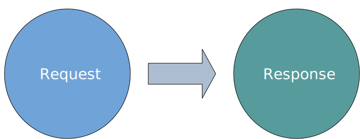
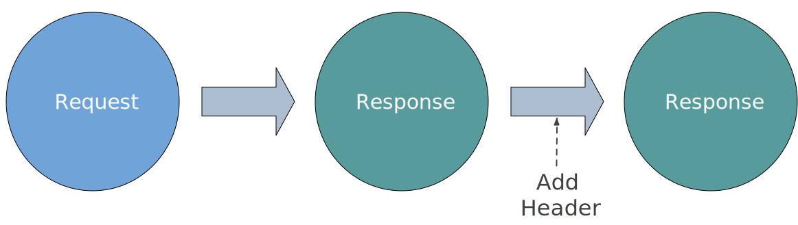
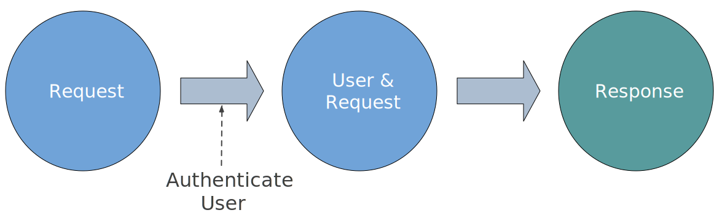
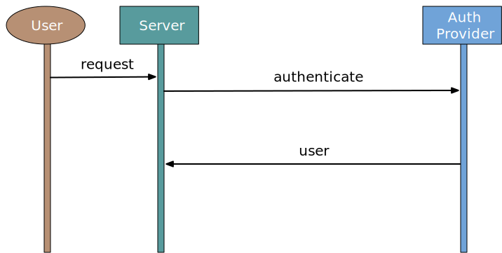
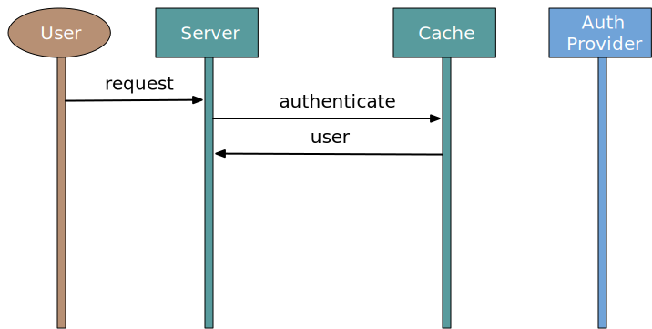
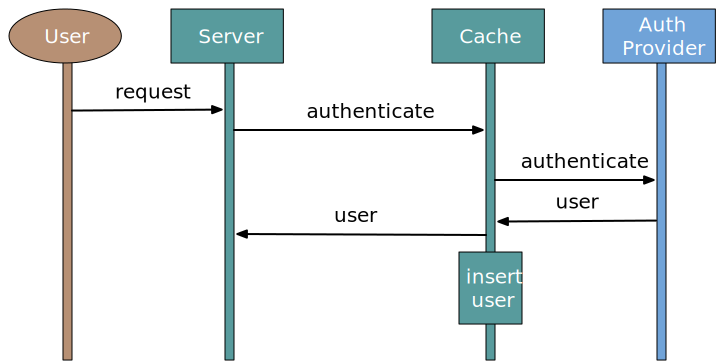
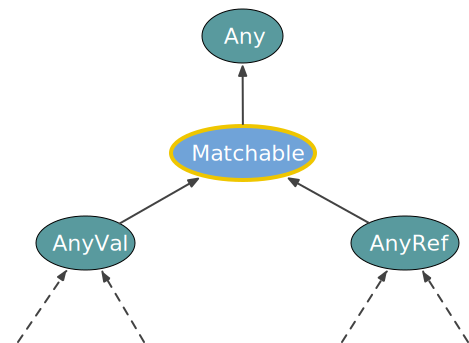

background-image: url(../img/fp-tower/website-background.svg) class: center, middle, white .title[Pattern Matching<br>&<br>Reflection] --- # Scala Functional Subset .forty-seven-left[ ## FP Functions: ## • Total ## • Deterministic ## • Pure or without actions ] .forty-seven-left[ ## General JVM recommendations: ## • Ignore null ## ??? ] --- # Definition <br><br><br><br> .sixty-two-left[.center[ ## "Reflection is the ability of a program to .hl2[inspect], and possibly even .hl2[modify itself]" ]] --- class: medium-code # Reflection .fifty-seven-left[ ```scala case class Robot(position: Int, direction: Direction) { def move: Robot = direction match { case Backward => copy(position = position - 1) case Forward => copy(position = position + 1) } } sealed trait Direction case object Forward extends Direction case object Backward extends Direction ``` ] -- .thirty-seven-right[ ```scala val robot = Robot(0, Forward) robot.getClass.getMethods .map(_.getName) // res: Array[String] = Array( // "equals", // "toString", // "hashCode", // "position", // "copy", // "direction", // "move", // "productElementNames", // ... ``` ] --- class: medium-code # Reflection .fifty-seven-left[ ```scala case class Robot(position: Int, direction: Direction) { def move: Robot = direction match { case Backward => copy(position = position - 1) case Forward => copy(position = position + 1) } } sealed trait Direction case object Forward extends Direction case object Backward extends Direction ``` ] .thirty-seven-right[ ```scala val robot = Robot(0, Forward) robot.`getClass.getMethods` .map(_.getName) // res: Array[String] = Array( // "equals", // "toString", // "hashCode", // "position", // "copy", // "direction", // "move", // "productElementNames", // ... ``` ] --- class: medium-code # Reflection .fifty-seven-left[ ```scala case class Robot(position: Int, direction: Direction) { def move: Robot = direction match { case Backward => copy(position = position - 1) case Forward => copy(position = position + 1) } } sealed trait Direction case object Forward extends Direction case object Backward extends Direction ``` ] .thirty-seven-right[ ```scala val robot = Robot(0, Forward) robot.getClass.getMethods .map(_.getName) // res: Array[String] = Array( // "`equals`", // "`toString`", // "`hashCode`", // "position", // "copy", // "direction", // "move", // "productElementNames", // ... ``` ] --- class: medium-code # Reflection .fifty-seven-left[ ```scala case class Robot(position: Int, direction: Direction) { def move: Robot = direction match { case Backward => copy(position = position - 1) case Forward => copy(position = position + 1) } } sealed trait Direction case object Forward extends Direction case object Backward extends Direction ``` ] .thirty-seven-right[ ```scala val robot = Robot(0, Forward) robot.getClass.getMethods .map(_.getName) // res: Array[String] = Array( // "equals", // "toString", // "hashCode", // "position", // "`copy`", // "direction", // "move", // "productElementNames", // ... ``` ] --- class: medium-code # Reflection .fifty-seven-left[ ```scala case class Robot(`position`: Int, `direction`: Direction) { def move: Robot = direction match { case Backward => copy(position = position - 1) case Forward => copy(position = position + 1) } } sealed trait Direction case object Forward extends Direction case object Backward extends Direction ``` ] .thirty-seven-right[ ```scala val robot = Robot(0, Forward) robot.getClass.getMethods .map(_.getName) // res: Array[String] = Array( // "equals", // "toString", // "hashCode", // "`position`", // "copy", // "`direction`", // "move", // "productElementNames", // ... ``` ] --- class: medium-code # Reflection .fifty-seven-left[ ```scala case class Robot(position: Int, direction: Direction) { def `move`: Robot = direction match { case Backward => copy(position = position - 1) case Forward => copy(position = position + 1) } } sealed trait Direction case object Forward extends Direction case object Backward extends Direction ``` ] .thirty-seven-right[ ```scala val robot = Robot(0, Forward) robot.getClass.getMethods .map(_.getName) // res: Array[String] = Array( // "equals", // "toString", // "hashCode", // "position", // "copy", // "direction", // "`move`", // "productElementNames", // ... ``` ] --- class: medium-code # Reflection .fifty-seven-left[ ```scala case class Robot(position: Int, direction: Direction) { def move: Robot = direction match { case Backward => copy(position = position - 1) case Forward => copy(position = position + 1) } } sealed trait Direction case object Forward extends Direction case object Backward extends Direction ``` ] .thirty-seven-right[ ```scala val robot = Robot(0, Forward) classOf[Robot] .getDeclaredMethod("move") .invoke(robot) // res: Object = Robot(1, Forward) ``` ] --- class: medium-code # Reflection .fifty-seven-left[ ```scala case class Robot(position: Int, direction: Direction) { def move: Robot = direction match { case Backward => copy(position = position - 1) case Forward => copy(position = position + 1) } } sealed trait Direction case object Forward extends Direction case object Backward extends Direction ``` ] .thirty-seven-right[ ```scala val robot = Robot(0, Forward) classOf[Robot] .`getDeclaredMethod("move")` .invoke(robot) // res: Object = Robot(1, Forward) ``` ] --- class: medium-code # Reflection .fifty-seven-left[ ```scala case class Robot(position: Int, direction: Direction) { def move: Robot = direction match { case Backward => copy(position = position - 1) case Forward => copy(position = position + 1) } } sealed trait Direction case object Forward extends Direction case object Backward extends Direction ``` ] .thirty-seven-right[ ```scala val `robot` = Robot(0, Forward) classOf[Robot] .getDeclaredMethod("move") .`invoke(robot)` // res: Object = Robot(1, Forward) ``` ] --- class: medium-code # Reflection .fifty-seven-left[ ```scala case class Robot(position: Int, direction: Direction) { def move: Robot = direction match { case Backward => copy(position = position - 1) case Forward => copy(position = position + 1) } } sealed trait Direction case object Forward extends Direction case object Backward extends Direction ``` ] .thirty-seven-right[ ```scala val robot = Robot(`0`, Forward) classOf[Robot] .getDeclaredMethod("move") .invoke(robot) // res: Object = Robot(`1`, Forward) ``` ] --- # Reflection <br><br> .fifty-seven-left[ ## 1. Runtime ## 2. Compile time (Macros) ] --- # List in the standard library <br><br><br><br><br><br> .eighty-two-left[ ```scala case class ::[A](val head: A, private var next: List[A]) extends List[A] ``` ] --- # List in the standard library <br><br><br><br><br><br> .eighty-two-left[ ```scala case class ::[A](val head: A, `private var next`: List[A]) extends List[A] ``` ] --- # Runtime Reflection .sixty-seven-left[ ```scala val list = List(1,2,3) // list: List[Int] = List(1, 2, 3) val field = classOf[::[Int]].getDeclaredField("next") field.setAccessible(true) field.set(list, List(4,5,6)) list // list: List[Int] = List(1, 4, 5, 6) ``` ] --- # Runtime Reflection .sixty-seven-left[ ```scala val list = List(1,2,3) // list: List[Int] = List(1, 2, 3) val field = classOf[::[Int]].`getDeclaredField("next")` field.setAccessible(true) field.set(list, List(4,5,6)) list // list: List[Int] = List(1, 4, 5, 6) ``` ] --- # Runtime Reflection .sixty-seven-left[ ```scala val list = List(1,2,3) // list: List[Int] = List(1, 2, 3) val field = classOf[::[Int]].getDeclaredField("next") field.`setAccessible(true)` field.set(list, List(4,5,6)) list // list: List[Int] = List(1, 4, 5, 6) ``` ] --- # Runtime Reflection .sixty-seven-left[ ```scala val list = List(1,2,3) // list: List[Int] = List(1, 2, 3) val field = classOf[::[Int]].getDeclaredField("next") field.setAccessible(true) field.`set`(list, `List(4,5,6)`) list // list: List[Int] = List(1, 4, 5, 6) ``` ] --- # Runtime Reflection .sixty-seven-left[ ```scala val list = List(1,2,3) // list: List[Int] = List(1, `2, 3`) val field = classOf[::[Int]].getDeclaredField("next") field.setAccessible(true) field.set(list, List(4,5,6)) list // list: List[Int] = List(1, `4, 5, 6`) ``` .center[ ## Mutate an immutable list 😱😱😱 ] ] --- # Pattern matching .fifty-two-left[ ```scala def increment(value: Any) = value match { case x: Int => x + 1 case x: Double => x + 1.0 case other => other } ``` <br> ```scala increment(1) // res: Any = 2 increment(5.3) // res: Any = 6.3 increment("Hello") // res: Any = "Hello" ``` ] --- # Pattern matching .fifty-two-left[ ```scala def increment(`value: Any`) = value match { case x: Int => x + 1 case x: Double => x + 1.0 case other => other } ``` <br> ```scala increment(1) // res: Any = 2 increment(5.3) // res: Any = 6.3 increment("Hello") // res: Any = "Hello" ``` ] --- # Pattern matching .fifty-two-left[ ```scala def increment(value: Any) = value match { case `x: Int ` => x + 1 case `x: Double` => x + 1.0 case other => other } ``` <br> ```scala increment(1) // res: Any = 2 increment(5.3) // res: Any = 6.3 increment("Hello") // res: Any = "Hello" ``` ] --- # Pattern matching .fifty-two-left[ ```scala def increment(value: Any) = value match { case x: Int => `x + 1 ` case x: Double => `x + 1.0` case other => other } ``` <br> ```scala increment(1) // res: Any = 2 increment(5.3) // res: Any = 6.3 increment("Hello") // res: Any = "Hello" ``` ] --- # Pattern matching .fifty-two-left[ ```scala def increment(value: Any) = value match { case x: Int => x + 1 case x: Double => x + 1.0 case `other => other` } ``` <br> ```scala increment(1) // res: Any = 2 increment(5.3) // res: Any = 6.3 increment("Hello") // res: Any = "Hello" ``` ] --- # Pattern matching .fifty-two-left[ ```scala def increment(value: Any) = value match { case x: Int => x + 1 case x: Double => x + 1.0 case other => other } ``` <br> ```scala increment(1) // res: Any = 2 increment(5.3) // res: Any = 6.3 increment("Hello") // res: Any = "Hello" ``` ] .forty-two-right[ ```scala def increment(value: Any) = if(value.isInstanceOf[Int]) value.asInstanceOf[Int] + 1 else if(value.isInstanceOf[Double]) value.asInstanceOf[Double] + 1.0 else value ``` ] --- # Pattern matching .fifty-two-left[ ```scala def increment(value: Any) = value match { case x: Int => x + 1 case x: Double => x + 1.0 case other => other } ``` <br> ```scala increment(1) // res: Any = 2 increment(5.3) // res: Any = 6.3 increment("Hello") // res: Any = "Hello" ``` ] .forty-two-right[ ```scala def increment(value: Any) = if(value.`isInstanceOf`[Int]) value.asInstanceOf[Int] + 1 else if(value.`isInstanceOf`[Double]) value.asInstanceOf[Double] + 1.0 else value ``` ] --- # Pattern matching .fifty-two-left[ ```scala def increment(value: Any) = value match { case x: Int => x + 1 case x: Double => x + 1.0 case other => other } ``` <br> ```scala increment(1) // res: Any = 2 increment(5.3) // res: Any = 6.3 increment("Hello") // res: Any = "Hello" ``` ] .forty-two-right[ ```scala def increment(value: Any) = if(value.isInstanceOf[Int]) value.`asInstanceOf`[Int] + 1 else if(value.isInstanceOf[Double]) value.`asInstanceOf`[Double] + 1.0 else value ``` ] --- # Pattern matching .fifty-two-left[ ```scala def increment(value: Any) = value match { case x: Int => x + 1 case x: Double => x + 1.0 `case x: Option[Int] => x.map(_ + 1)` case other => other } ``` ```scala increment(1) // res: Any = 2 increment(5.3) // res: Any = 6.3 increment("Hello") // res: Any = "Hello" increment(Some(1)) // res: Any = `Some(2)` ``` ] --- # Pattern matching .fifty-two-left[ ```scala def increment(value: Any) = value match { case x: Int => x + 1 case x: Double => x + 1.0 case x: Option[Int] => x.map(_ + 1) case other => other } ``` ] .eighty-seven-left[ ```scala increment(Some("Hello")) // java.lang.`ClassCastException: class String cannot be cast to class Integer` ``` ] --- # Pattern matching .fifty-two-left[ ```scala def increment(value: Any) = value match { case x: Int => x + 1 case x: Double => x + 1.0 case x: Option[Int] => x.map(_ + 1) case other => other } ``` ] .eighty-seven-left[ ```scala increment(Some("Hello")) // java.lang.ClassCastException: class String cannot be cast to class Integer ``` ```scala Some("Hello").isInstanceOf[Option[Int]] // res: Boolean = `true` ``` ] --- # Open Trait .seventy-seven-left[ ```scala trait Auth { def authenticate(token: Token): Future[User] } ``` ] --- # Open Trait .seventy-seven-left[ ```scala trait Auth { def authenticate(token: Token): Future[User] } class OktaAuth(client: RestClient) extends Auth { /* ... */ } class MockAuth(users: Map[Token, User]) extends Auth { /* ... */ } ``` ] --- # HTTP Server <br><br><br> .center[  ] --- # HTTP Middleware <br><br><br> .center[  ] --- # HTTP Middleware <br><br><br> .center[  ] --- # Authentication Middleware .fifty-seven-left[ ```scala def checkUser(request: Request, auth: Auth) = request.headers.get("Authorization") match { case None => reject(Forbidden()) case Some(token) => auth.authenticate(token).map(user => provide(user) ) } ``` ] --- # Authentication Middleware .fifty-seven-left[ ```scala def checkUser(request: Request, auth: Auth) = request.`headers.get("Authorization")` match { case None => reject(Forbidden()) case Some(token) => auth.authenticate(token).map(user => provide(user) ) } ``` ] --- # Authentication Middleware .fifty-seven-left[ ```scala def checkUser(request: Request, auth: Auth) = request.headers.get("Authorization") match { case `None => reject(Forbidden())` // 403 Status case Some(token) => auth.authenticate(token).map(user => provide(user) ) } ``` ] --- # Authentication Middleware .fifty-seven-left[ ```scala def checkUser(request: Request, auth: Auth) = request.headers.get("Authorization") match { case None => reject(Forbidden()) // 403 Status case `Some(token)` => `auth.authenticate(token)`.map(user => provide(user) ) } ``` ] --- # Authentication Middleware .fifty-seven-left[ ```scala def checkUser(request: Request, auth: Auth) = request.headers.get("Authorization") match { case None => reject(Forbidden()) // 403 Status case Some(token) => auth.authenticate(token).map(`user` => `provide(user)` // pass it down the line ) } ``` ] --- # Authentication Middleware .fifty-seven-left[ ```scala def checkUser(request: Request, auth: Auth) = request.headers.get("Authorization") match { case None => reject(Forbidden()) // 403 Status case Some(token) => auth.authenticate(token).map(user => provide(user) // pass it down the line ) } ``` ] --- # Auth instance is defined in a config file .forty-seven-left[ ## production.conf ```bash { auth : { type : "`Okta`" baseUrl : "https://okta.com/auth0" api-key : "X28fd-OS0-8S" } } ``` ] .forty-seven-right[ ## local.conf ```bash { auth : { type : "`Mock`" users : { "bob" : "abcd" "eda" : "xxxx" } } } ``` ] --- # Authentication Middleware .sixty-seven-left[ ```scala def checkUser(request: Request, auth: Auth, env: Env) = (env, auth) match { case (Prod, _: MockAuth) => InternalServerError() case _ => request.headers.get("Authorization") match { case None => reject(Forbidden()) case Some(token) => auth.authenticate(token).map(user => provide(user) ) } } ``` ] --- # Authentication Middleware .sixty-seven-left[ ```scala def checkUser(request: Request, auth: Auth, `env: Env`) = (env, auth) match { case (Prod, _: MockAuth) => InternalServerError() case _ => request.headers.get("Authorization") match { case None => reject(Forbidden()) case Some(token) => auth.authenticate(token).map(user => provide(user) ) } } ``` ] .twenty-seven-right[ ```scala enum Env { case Local, UAT, Prod } ``` ] --- # Authentication Middleware .sixty-seven-left[ ```scala def checkUser(request: Request, auth: Auth, env: Env) = `(env, auth) match` { case (Prod, _: MockAuth) => InternalServerError() case _ => request.headers.get("Authorization") match { case None => reject(Forbidden()) case Some(token) => auth.authenticate(token).map(user => provide(user) ) } } ``` ] .twenty-seven-right[ ```scala enum Env { case Local, UAT, Prod } ``` ] --- # Authentication Middleware .sixty-seven-left[ ```scala def checkUser(request: Request, auth: Auth, env: Env) = (env, auth) match { `case (Prod, _: MockAuth) => InternalServerError()` case _ => request.headers.get("Authorization") match { case None => reject(Forbidden()) case Some(token) => auth.authenticate(token).map(user => provide(user) ) } } ``` ] .twenty-seven-right[ ```scala enum Env { case Local, UAT, Prod } ``` ] --- # Authentication Middleware .sixty-seven-left[ ```scala def checkUser(request: Request, auth: Auth, env: Env) = (env, auth) match { case (Prod, _: MockAuth) => InternalServerError() `case _ => ` // same as before request.headers.get("Authorization") match { case None => reject(Forbidden()) case Some(token) => auth.authenticate(token).map(user => provide(user) ) } } ``` ] .twenty-seven-right[ ```scala enum Env { case Local, UAT, Prod } ``` ] --- # Authentication Middleware .sixty-seven-left[ ```scala def checkUser(request: Request, auth: Auth, env: Env) = (env, auth) match { case (Prod, _: MockAuth) => InternalServerError() case _ => request.headers.get("Authorization") match { case None => reject(Forbidden()) case Some(token) => auth.`authenticate`(token).map(user => provide(user) ) } } ``` ] --- # Increase load <br> .seventy-seven-left.center[  ] --- # Cache authenticate requests <br> .seventy-seven-left.center[  ] --- # Cache authenticate requests <br> .seventy-seven-left.center[  ] --- # Cache authenticate requests .seventy-two-left[ ```scala class CachedAuth( cache : Cache, underlying: Auth, ) extends Auth { /* ... */ } ``` ] --- # Cache authenticate requests .seventy-two-left[ ```scala class CachedAuth( cache : `Cache`, underlying: Auth, ) extends Auth { /* ... */ } ``` ] --- # Cache authenticate requests .seventy-two-left[ ```scala class CachedAuth( cache : Cache, underlying: `Auth`, ) extends Auth { /* ... */ } ``` ] --- # Authentication Middleware .seventy-seven-left[ ```scala def checkUser(request: Request, auth: Auth, env: Env) = (env, auth) match { case (Prod, _: MockAuth) => InternalServerError() case _ => // check header and dispatch to auth } ``` ] --- # Authentication Middleware .seventy-seven-left[ ```scala def checkUser(request: Request, auth: Auth, env: Env) = (env, auth) match { case (Prod, _: MockAuth) => InternalServerError() case _ => // check header and dispatch to auth } ``` <br> ```scala val env : Env = Prod val auth: Auth = new CachedAuth(cache, new MockAuth(...)) ``` ] --- # Authentication Middleware .seventy-seven-left[ ```scala def checkUser(request: Request, auth: Auth, env: Env) = (env, auth) match { case (Prod, _: MockAuth) => InternalServerError() case _ => // check header and dispatch to auth } ``` <br> ```scala val env : Env = Prod val auth: Auth = new `CachedAuth`(cache, new `MockAuth`(...)) ``` ] --- # Authentication Middleware .seventy-seven-left[ ```scala def checkUser(request: Request, auth: Auth, env: Env) = (env, auth) match { case (Prod, `_: MockAuth`) => InternalServerError() case _ => // check header and dispatch to auth } ``` <br> ```scala val env : Env = Prod val auth: Auth = new `CachedAuth`(cache, new MockAuth(...)) ``` ] --- # Authentication Middleware .seventy-seven-left[ ```scala def checkUser(request: Request, auth: Auth, env: Env) = (env, auth) match { case (Prod, _: MockAuth) => InternalServerError() `case _ ` => // check header and dispatch to auth } ``` <br> ```scala val env : Env = Prod val auth: Auth = new CachedAuth(cache, new `MockAuth`(...)) ``` ] --- # Pattern Matching .forty-seven-left[ ## Unsafe ```scala auth match { case _: MockAuth => ... case _ => ... } ``` ] .forty-seven-right[ ## Safe ```scala env match { case Local => ... case UAT => ... case Prod => ... } ``` ] --- # Safe pattern matching keywords .forty-seven-left[ ## 1. final class ## 2. sealed class/trait ## 3. case class/object ## 4. primitives (Int, Boolean, ...) ] --- # Unsafe pattern matching keywords .forty-seven-left[ ## 1. abstract class ## 2. open class/trait (new in Scala 3) ## 3. no keyword, open by default ] --- # Contract .sixty-seven-left[ ```scala trait Auth { def authenticate(token: Token): Future[Option[User]] // if the token is valid, revoke makes it invalid def revoke(token: Token): Future[Unit] } ``` ] --- # Contract .sixty-seven-left[ ```scala trait Auth { def authenticate(token: Token): Future[Option[User]] // if the token is valid, revoke makes it invalid def `revoke`(token: Token): Future[Unit] } ``` ] --- # Contract .sixty-seven-left[ ```scala trait Auth { def authenticate(token: Token): Future[Option[User]] // if the token is valid, revoke makes it invalid def revoke(token: Token): Future[Unit] } ``` ```scala def checkAuth(auth: Auth) = test("revoke makes token invalid") { forAll { (token: Token) => for { _ <- auth.revoke(token) user <- auth.authenticate(token) } assert(user == None) } } ``` ] --- # Contract .sixty-seven-left[ ```scala trait Auth { def authenticate(token: Token): Future[Option[User]] // if the token is valid, revoke makes it invalid def revoke(token: Token): Future[Unit] } ``` ```scala def checkAuth(auth: Auth) = test("revoke makes token invalid") { forAll { (token: Token) => for { _ <- auth.`revoke`(token) user <- auth.`authenticate`(token) } assert(user == None) } } ``` ] --- # Contract .sixty-seven-left[ ```scala trait Auth { def authenticate(token: Token): Future[Option[User]] // if the token is valid, revoke makes it invalid def revoke(token: Token): Future[Unit] } ``` ```scala def checkAuth(auth: Auth) = test("revoke makes token invalid") { forAll { (token: Token) => for { _ <- auth.revoke(token) `user` <- auth.authenticate(token) } assert(user == `None`) } } ``` ] --- class: white background-image: url(../img/fp-tower/website-background.svg) # .white[Summary] <br> ## .white[Ignore runtime reflection] ## .white[But, pattern matching uses reflection] ## .white[Two dangerous use cases:] * ### .white[Classes with type parameters] * ### .white[Classes meant for extension] --- # Scala 3: Matchable trait <br> .sixty-two-left[ ```scala def increment(value: Any) = value match { case x: Int => x + 1 case x: Double => x + 1.0 case other => other } // warning pattern selector should be an instance of // Matchable, but it has unmatchable type Any instead ``` ] .thirty-seven-right[  ] --- # Scala 3: Matchable trait <br> .sixty-two-left[ ```scala def increment(value: Any) = value match { case x: Int => x + 1 case x: Double => x + 1.0 case other => other } // warning pattern selector should be an instance of // `Matchable`, but it has unmatchable type `Any` instead ``` ] .thirty-seven-right[ ]